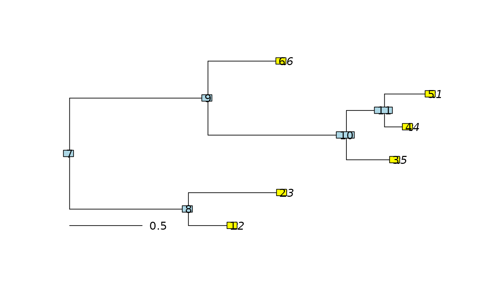

Calculate length of paths between each pair of vertices within tree
Source:R/PathLengths.R
PathLengths.RdGiven a weighted rooted tree tree, PathLengths() returns the distance
from each vertex to each of its descendant vertices.
Arguments
- tree
Original tree of class
phylo, inPreorder.- fullMatrix
Logical specifying return format; see "value" section`.
- use.na
Logical specifying whether to set non-existent paths to
NA, or to leave uninitialized. Set toFALSEto maximize performance.
Value
If fullMatrix = TRUE, PathLengths() returns a square matrix in
which entry [i, j] denotes the distance from internal node i to the
descendant vertex j.
Vertex pairs without a continuous directed path are denoted NA if use.na
is TRUE.
If fullMatrix = FALSE, PathLengths() returns a data.frame with three
columns: start lists the deepest node in each path (i.e. that closest
to the root); end lists the shallowest node (i.e. that closest to a leaf);
length lists the total length of that path.
See also
Other tree properties:
Cherries(),
ConsensusWithout(),
LongBranch(),
MatchEdges(),
NSplits(),
NTip(),
NodeNumbers(),
SplitsInBinaryTree(),
TipLabels(),
TreeIsRooted(),
Treeness()
Examples
tree <- rtree(6)
plot(tree)
add.scale.bar()
nodelabels()
tiplabels()

PathLengths(tree)
#> start end length
#> 1 7 1 1.1269270
#> 2 8 1 0.3082923
#> 3 7 2 1.4682141
#> 4 8 2 0.6495795
#> 5 7 3 2.2470673
#> 6 9 3 1.2937119
#> 7 10 3 0.3399792
#> 8 7 4 2.3350161
#> 9 9 4 1.3816607
#> 10 10 4 0.4279280
#> 11 11 4 0.1654539
#> 12 7 5 2.4917303
#> 13 9 5 1.5383748
#> 14 10 5 0.5846422
#> 15 11 5 0.3221681
#> 16 7 6 1.4634807
#> 17 9 6 0.5101252
#> 18 7 8 0.8186347
#> 19 7 9 0.9533555
#> 20 7 10 1.9070881
#> 21 9 10 0.9537327
#> 22 7 11 2.1695622
#> 23 9 11 1.2162068
#> 24 10 11 0.2624741